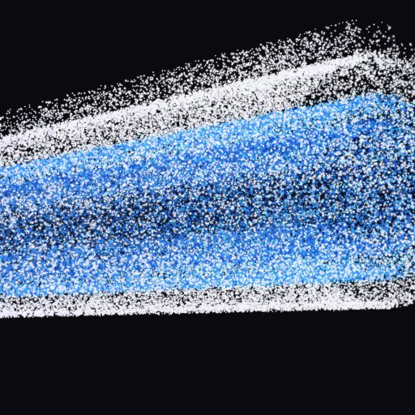
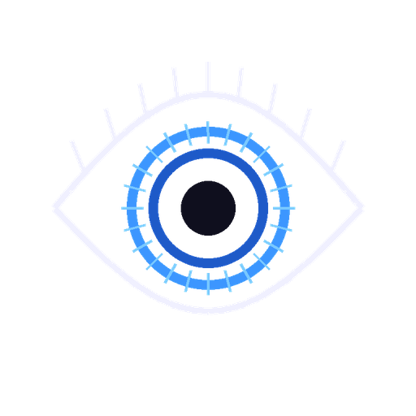
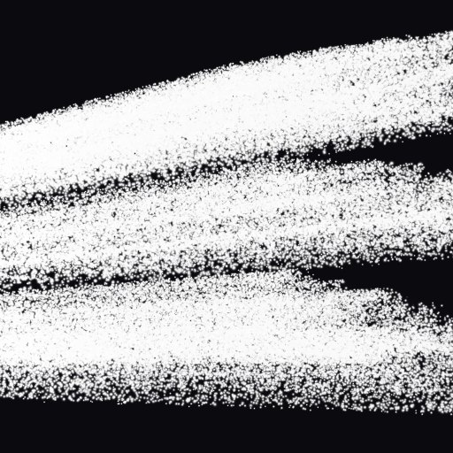
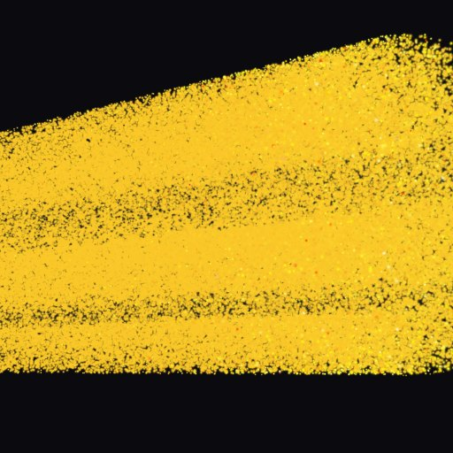
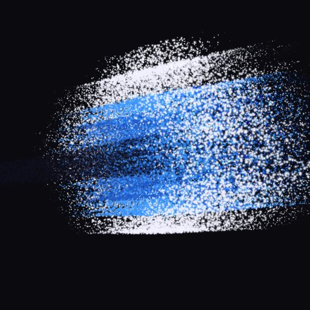
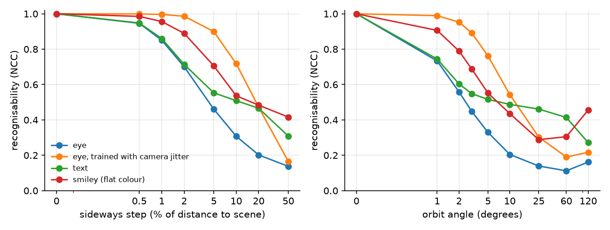
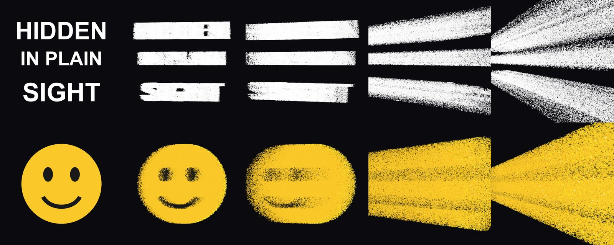

Hidden in Plain Sight
We hide pictures inside 3D scenes. From almost everywhere you see scattered specks. From one secret spot, they snap into a picture.
Runs in your browser. Wander around and hunt for the spot, or press Show me the spot.
A picture, taken apart along lines of sight
The trick is centuries old: painters and street artists hide images that only line up from one spot. We do it with tiny coloured specks floating in 3D.
-
Pick a spot and a picture
Choose a secret viewpoint in the scene and the picture that should appear there.
-
Scatter it in depth
Every dot of the picture becomes a speck of the same colour, placed somewhere along that dot's line of sight at a random distance: some near, some far.
-
Only one spot lines up
From the secret spot each speck lands exactly where its dot belongs, so you see the picture. Step aside and near and far specks slide past each other: it scrambles.
A toy version seen from above: 7 picture dots, 4 specks each. Our real scenes use about 70,000 to 150,000 specks for a full picture, and a short optimisation then fine-tunes each speck's colour, opacity and size so the picture is crisp from the secret spot.
Four hidden pictures
Each card shows where the viewer starts. Hover to see what is hiding inside. Tap a picture to peek at what is hiding inside; tap again to open it. Then find the spot yourself.


The Eye
136k specks. From the start it is a smear of blue and white dust.
Find the spot

Hidden in Plain Sight
135k specks. Three streaky bands hint at three lines of text.
Find the spot
Smile
149k specks. One flat colour, with dark streaks where the eyes and mouth go.
Find the spot
The Eye, wide reveal zone
Same eye, trained to tolerate a wobbly camera: much easier to find, a little less surprising. More under Findings.
Find the spotScenes are 5 to 10 MB each and load in a few seconds. Controls: drag to look, WASD to move; H or the Show me the spot button flies you there.
How big is the secret spot?
If the picture only appears from one exact point, nobody will ever find it. If it appears from everywhere, it is not hidden. So the question that matters is the size of the reveal zone: how far you can move from the secret spot before the picture falls apart.
The setup
Every scene is a standard 3D Gaussian splat (the usual 3DGS PLY file), so any 3DGS renderer can show it. To build one, we sample about 150,000 points on the picture's "ink" (its non-transparent pixels), cast each through the secret camera (40° field of view, 9.5 units from the scene centre) and drop one small Gaussian at a random distance along that ray, inside a ball around the centre. Positions are then frozen. A short gsplat fit (800 Adam steps, 1200 for the jitter variant; L1 + 0.2·D-SSIM against the picture, from the secret camera only) adjusts each speck's colour, opacity and size. Size is capped at 1.5 secret-view pixels at the speck's own depth, so specks stay specks. There is no diffusion model and no scene training: one small fit on a single Colab GPU.
Measuring "can you still see it?"
We render the scene from cameras that step sideways (as a percentage of the distance to the scene, re-aimed at the centre) or orbit around the vertical axis, and score each view's recognisability: the normalised cross-correlation (NCC) between the rendered brightness and the hidden picture's, computed over the picture's own pixels only. 1 means perfectly visible; around 0 means scrambled. We started with SSIM, but it stayed high even far from the spot (0.52 for the eye at a 50% step, 0.56 for the smiley at 120°) because the dark background matches whatever you look at, so we switched.

A knob: camera jitter
Borrowing an idea from Illusion3D, we can train with a wobbly camera: each fit step renders from a random point up to 0.3 units from the secret spot (about 3% of the viewing distance), with the wobble growing from zero over the first half of training.
The result is a much wider reveal zone, at almost no cost at the exact spot. The fit switches off nearly half the specks (71k stay visible, against 136k without jitter). Our reading: it removes the specks far from the middle depth, which move the most when the camera moves, so the cloud flattens toward a flat billboard. A billboard is easy to find but also less magical up close.
| Sideways step | 1% | 2% | 5% | 10% | 50% |
|---|---|---|---|---|---|
| Eye | 0.85 | 0.70 | 0.46 | 0.31 | 0.14 |
| Eye, trained with jitter | 1.00 | 0.99 | 0.90 | 0.72 | 0.16 |
Recognisability (NCC). At a 50% step both are scrambled again, so the picture stays hidden from far away.
Jitter trades surprise for discoverability. It is a single training parameter, so we report the trade-off instead of hiding it.
Rows stay rows
We expected that from the side the specks would look like random dust. They don't. When you orbit around the vertical axis, every speck slides left or right on screen but barely changes its height: rows of the picture stay rows, only their left-to-right order scrambles. Any cloud built along the secret camera's lines of sight has this property, and so does real anamorphic street art, where from the wrong spot you see coloured fragments, not noise.
It explains the curves above: the text's three lines and the smiley's eyes and mouth survive as bands from far off-angle, which keeps the text's score around 0.4 out to 60° and the smiley's between 0.3 and 0.46 from 25° to 120°, against 0.11 to 0.16 for the eye. For hiding a picture it is a limitation; for art it is part of the charm.

What you optimise is what you see
Browser splat renderers filter tiny splats differently from gsplat. Spark's default blur dims an isolated 1-pixel speck by about 27%. We switched it to gsplat's "classic" filter (preBlurAmount 0.3, blurAmount 0), so the browser matches the training renderer.
Keep the specks tiny
Level-of-detail merges small splats into bigger ones, which would erase the effect, so it is off. Speck centres are kept at 32-bit precision; 16-bit centres can make far-away specks jitter.
Small enough for the web
Scenes are 70k to 150k Gaussians with view-independent colour only: 5 to 10 MB, so they load in seconds. A 1M-Gaussian test scene (68 MB) also rendered fine on a laptop.
Hiding a picture in a garden
Specks floating in the dark are a clean testbed. The real goal is a picture hidden inside an ordinary captured place: the Mip-NeRF 360 garden scene. From everywhere it should look like the garden; from one spot, a picture appears across the leaves, gravel and table.
This section will compare two ways of doing it, with renders, a fly-in video and a viewer link.
Projection painting
No training. Recolour the garden's own Gaussians by projecting the picture from the secret spot, the way Felice Varini paints across buildings. From other angles you would see painted fragments.
Optimisation
Nudge the existing Gaussians' positions, base colours and opacities so the picture appears from the secret view while every normal view stays the same. View-independent colour only.
What we tried, and why we changed course
A condensed version of our running process log. Each step was decided by looking at what the previous one got wrong.
-
The secret view was perfect. Everything else was a blob.
Tried
40k Gaussians scattered at random depths in front of the secret camera, optimised for 600 steps so the secret view matches a smiley with "CS180 SPLAT".
Happened
Secret view near-perfect. But from the side it was a smeared yellow blob that still read as a smiley. With only one view supervised, the Gaussians grew large and opaque and filled a solid cone.
Decision
Judge by the side views, not the secret one. Cap each speck's size, spread depths much wider, place specks only on ink, and plan camera jitter for the reveal zone.

Target, secret view, orbit 0.15 rad, orbit 0.6 rad. -
The browser was quietly dimming our specks.
Tried
A static three.js + Spark viewer: fly controls, "Show me the spot" (a 2.5 s glide to the secret pose), a warmer/colder meter, a scene picker.
Found
Spark adds a 0.3 px blur and then lowers opacity to compensate, which darkens isolated ~1 px specks by about 27%. Level-of-detail would merge them.
Decision
Use the gsplat-equivalent "classic" filter, turn off level-of-detail and store full-precision positions, so what we optimise in Python is what people see.
// condensed from web/viewer.js: match gsplat's classic rasterisation new SparkRenderer({ preBlurAmount: 0.3, blurAmount: 0.0, enableLod: false, accumExtSplats: true }) -
Specks, not blobs. But the picture was extruded into a tube.
Tried
135k specks on the eye's ink, depths spread 3 to 30 units, each capped at 1.5 secret-view pixels, 1000-step fit. Variant: Illusion3D-style scheduled camera jitter.
Happened
Secret view SSIM 0.997, and side views are now specks. But the cloud is the picture stretched into a tube, which gives the trick away. Jitter widened the reveal zone (SSIM at a 5% step 0.62 → 0.89) for a small cost at the spot (0.997 → 0.96).
Decision
Fix the tube: only place specks where each ray passes through a ball around the centre. Keep jitter as the reveal-zone knob and report the trade-off.

A1, no jitter. First column: the hidden picture. Top row: sideways steps of 0, 1, 2, 5, 10, 20% of the distance. Bottom row: orbits of 0, 3, 10, 25, 60, 120°. 
A1, trained with camera jitter. Same layout; the eye holds together over much larger steps. -
A ball of dust didn't help, and that taught us why.
Tried
Ball placement: each ray only gets specks inside a sphere around the scene centre, hoping side views would look like round dust.
Happened
Barely different: still streaks of the picture from the side. The lesson: orbiting never changes a speck's row, so rows stay rows. Also, SSIM was fooled by the dark background, so we switched to masked NCC.
Decision
Stop tuning the dust-cloud look; keep it as the baseline and the reveal-zone study. Move to a real scene, starting with a new idea: projection painting.

A2, ball placement. Same layout as above. From the side, the eye still reads as horizontal streaks. -
Into the garden.
Projection painting and optimisation inside a real captured scene. See Into a real scene.
Standing on a long tradition
Anamorphic images are nearly 500 years old, and recent work makes multi-view illusions with diffusion models and hides things inside radiance fields. Here is how we relate to each.
| Work | What it does | How we relate |
|---|---|---|
| The AmbassadorsHans Holbein the Younger, 1533 | A stretched shape across the floor of a portrait resolves into a skull only from a sharp side angle. | The original idea: one picture, one viewpoint. |
| Felice Varini; Julian BeeverAnamorphic architecture and street art | Paint fragments spread across buildings or pavement line up into a shape or a 3D illusion from one spot. | Our planned projection painting in the garden is Varini's method applied to a captured scene's Gaussians. |
| Shadow ArtMitra & Pauly, SIGGRAPH Asia 2009 | Optimises a 3D sculpture whose shadows from several light directions form several given images. | Same "3D object, chosen projections" idea, for binary shadows; ours is a full-colour view in an explorable scene. |
| Visual AnagramsGeng, Park & Owens, CVPR 2024 | Diffusion-generated images that change identity under flips, rotations or pixel permutations. | 2D multi-view illusions; we work in 3D and with a picture you supply. |
| Illusion3DFeng et al., 2024 | Optimises a 3D representation's appearance with 2D diffusion priors so an object shows different images from different angles. | Closest in spirit. We borrowed its scheduled camera jitter. We use no diffusion model: the hidden picture is given, and the rest of the scene is dust or a real capture. |
| LookingGlassChang et al., CVPR 2025 | Generative anamorphoses: images that look normal directly and reveal a second image through a mirror, lens or warp. | Generative and 2D; we place a given picture inside a walkable 3D scene. |
| ComplicitSplat and CLOAKHull et al., 2025 | Adversarial 3DGS scenes that look different from chosen angles, using view-dependent colour, to fool object detectors. | Closest technically for real scenes. Their channel is view-dependent colour aimed at a detector; ours is meant for people, and our real-scene version uses view-independent colour only. |
| StegaNeRF and GS-HiderICCV 2023; NeurIPS 2024 | Hide invisible data inside radiance fields that can be recovered only with a learned decoder. | The opposite goal: theirs is invisible to people; ours is visible to anyone standing in the right spot. |
What is ours
- A simple, training-light pipeline for visible anamorphic art inside explorable 3DGS scenes: specks along the secret camera's rays, one short fit of colour, opacity and capped size, and a browser renderer matched to the training renderer.
- A reveal-zone study with a controllable knob: a masked-NCC recognisability score, curves for sideways steps and orbits, and camera jitter shown to trade surprise for discoverability.
- Coming
Hiding pictures inside real captured scenes with view-independent colour only.
What is not
- The anamorphosis idea itself, which is centuries old.
- Scheduled camera jitter, from Illusion3D.
- 3D Gaussian splatting, the gsplat rasteriser and the Spark browser renderer.
Tools
- gsplat · fitting and evaluation
- three.js · browser 3D
- Spark · Gaussian-splat rendering in the browser
- Google Colab · T4 GPU
- NumPy, PIL, matplotlib
We used coding agents heavily, as the course encourages: for writing code, running experiments on Colab and drafting this page. Every experiment, result and change of direction is recorded in our process log (PROCESS.md in the project repository), which this page's Process section condenses.
Now go find the eye.
Try it yourself